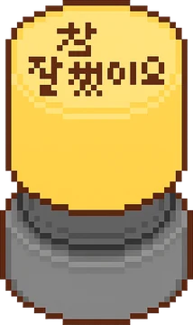
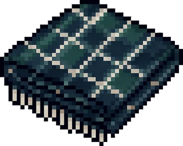
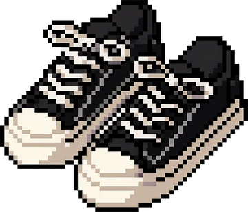
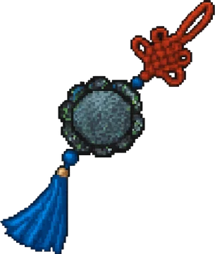
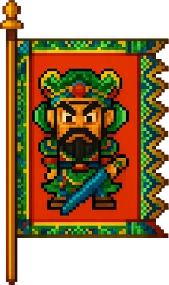

참 잘했어요 도장
도장을 찍은 상대에게 신뢰를 얻는다. 효과는 중첩되지 않으며, 약 1시간 정도 지속된다. 단, 도장 자국이 번지는 경우 효과가 반전되어 불신을 얻게 된다. 지속시간 동일.
ep.1
재난복구지원국 특수구조과와 SG 주식회사 전략탐사팀이
괴담 속에서 사용하는 지급물품 목록입니다.
이야기에서 이 물건을 만나면, 이름을 눌러 다시 볼 수 있습니다.

도장을 찍은 상대에게 신뢰를 얻는다. 효과는 중첩되지 않으며, 약 1시간 정도 지속된다. 단, 도장 자국이 번지는 경우 효과가 반전되어 불신을 얻게 된다. 지속시간 동일.

90*150 사이즈의 담요. 가벼운 천으로 이루어져 있다. 담요에 덮힌 부분은 괴담에게 인식되지 않는다. 단, 움직이면 효과가 해제된다.

착용자에게 불운을 불러오는 신발. 신발을 신고 있는 동안은 괴담 속 존재들에게 공격받지 않는다. 신발 끈이 풀리면 효과가 반대로 적용되어 행운을 불러오지만 괴담 속 존재들이 유인된다.

거울을 통해 보면 괴담이 만들어낸 환영이나 착각이 사라진 본질을 볼 수 있다. 단, 거울에 비친 괴담 역시 거울을 통해 당신의 생각을 읽어낼 수 있다.
등불 안에 깃든 도깨비에게 조언을 얻을 수 있다. 단, 도깨비는 장난기가 많아 3번 중 1번의 확률로 조언을 반대로 말한다.

땅에 꽂으면 약 10분간 주변 2m 반경(깃발을 중심으로 반지름 2m)은 괴담의 영향을 받지 않는다. 단, 한 번 땅에 꽂은 깃발은 다시 뽑을 수 없다.